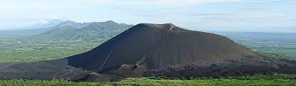

Turismo En Nicaragua
Ven y disfruta de esta hermosa tierra de lagos y volcanes
Conoce Nicaragua! Nicaragua tierra de grandes lagos y volcanes. Nicaragua tiene dos caras marítimas muy diferentes: una que mira al Pacífico y la otra, al Caribe, y dos inmensas cadenas de montañas que separan el país de Honduras, al norte, y de Costa Rica, al sur. Los numerosos volcanes activos, cinco en la actualidad, nos recuerdan continuamente el carácter sísmico de la zona, que ha ido conformando una geografía singular, con grandes lagos.
Nicaragua
Nicaragua, con cerca de 130.000 kilómetros cuadrados (aproximadamente lo mismo que Grecia), es el mayor país de la zona. Con frecuencia se le llama "el país de los lagos y volcanes; ya que posee numerosos lagunas y lagos, y una cadena de 40 volcanes a lo largo de la costa del Pacífico (de norte a sur). En esta costa (abajo a la izquierda, un trozo de tierra alargado) está el golfo de Fonseca, un puerto natural compartido con Honduras y el Salvador. Al sur tenemos la península de Cosigüina, formada con la ceniza, arena y lava del volcán del mismo nombre, situado en el extremo.
Lago cocibolca o lago de Nicaragua
Los nicaragüenses se enorgullecen de tener su mar privado, su majestuosidad y su belleza lo hacen una joya de la naturaleza. El Lago de Nicaragua o Cocibolca, es un lago de agua dulce y comparte orillas con los departamentos de Boaco, Chontales, Río San Juan, Rivas y Granada. Por su extensión es el segundo lago de mayor tamaño de América Latina y es el más grande de Centroamérica con una superficie de 8.200 Km. En este se encuentran 2 islas, Ometepe y Zapatera, 3 archipiélagos, Solentiname, Nancital y las Isletas de Granada, y 3 volcanes el Mombacho, Maderas y Concepción, todos tienen creada una infraestructura turística permitiendo ver la belleza del lago desde distintos puntos.
Volcán Mombacho
El Volcán Mombacho es un imponente volcán ubicado en los bordes del Lago de Nicaragua, cerca de la ciudad de Granada. El archipiélago de las 360 Isletas del lago es producto de una erupción de este volcán. En la actualidad el Mombacho es muy silencioso, con una densa selva que cubre sus faldas. La naturaleza y las vistas panorámicas caracterizan a este volcán. Es uno de los más famosos de Nicaragua debido a varios factores: su ubicación a sólo 10 km de la ciudad de Granada, la infraestructura de acceso que posee, los diversos senderos y, sobre todo, el místico bosque de neblí selva que ocupa buena parte de sus laderas y cima. Con sólo subir, en transporte, ya estará usted experimentando una aventura.
Laguna de Apoyo
Esta laguna tiene forma circular y sus laderas están formadas por altas paredes verticales cubiertas de bosque, sus aguas son salobres y claras. Se encuentra entre los Departamentos de Masaya y Granada. Desde diversos miradores es posible contemplar el paisaje, pero el más conocido es el Mirador de Catarina. Tiene en sus orillas bares, restaurantes, hoteles y quintas privadas para veraneo, algunas de estas con pequeños muelles o desembarcaderos.
Isla de Ometepe-Charco verde

En la laguna va encontrar muchas playas tranquilas y panorámicas a la sombra de grandes árboles viejos y con el fondo del volcán Concepción. Las playas están formadas por arena volcánica oscura y la natación es segura ya que no hay grandes olas, tiene abundantes algas que le confieren un color verde. Su fauna está poblada por tortugas, lagartos, y muchas especies de peces y de aves acuáticas. Los isleños cuentan muchas leyendas sobre la laguna de Charco Verde y sus alrededores. La historia más popular es sobre la figura demoníaca de Chico Largo, que habita en el fondo de la laguna verde. Chico Largo se materializa en los caminos solitarios que rodean Hacienda Venecia. No todo el mundo es capaz de verlo, pero los que lo hacen son atraídos a hacer un pacto diabólico. También se dice que en el fondo de la laguna hay un pueblo que se llama "El Encanto", que está poblado por personas que recogían frutos y cazaban en Charco Verde. Como castigo se convirtieron en vacas, cerdos, cocodrilos o tortugas. Algunos de la zona cuentan que encontraron terneros y vacas con dientes de oro y que muchas veces se ha oído el lamento del toro, vaca o de cerdo, igual al quejido
Cerro Negro
El volcán Cerro Negro se formó hace menos de 160 años (en 1850) y es el volcán más joven de Centro América. Su joven edad y su constante actividad hacen imposible el crecimiento de árboles y plantas en sus inclinadas y negras faldas. Algunas partes de este volcán están cubiertas por enormes rocas y otras por arena fina. Ascenderlo no es una tarea fácil, no hay ningún camino y es bastante inclinado; a esto agregue el intenso sol, sin ninguna sombra disponible, y tendrá como resultado una de las escaladas más duras en Nicaragua.